DTMF 신호를 받아 고객이 원하는 부서로 연결할 수 있도록 합니다. 이전 장에서 Queue (대기열)을 설정했을 때, Sales, Inquiry, Support 3개의 Queue 를 설정했습니다. 이 3개의 Queue 로 인입 전화를 분배할 수 있도록 합니다.
Connect 콘솔로 접속합니다. Contact flows 메뉴에서 ConnectIMD5 를 선택해서 편집합니다. 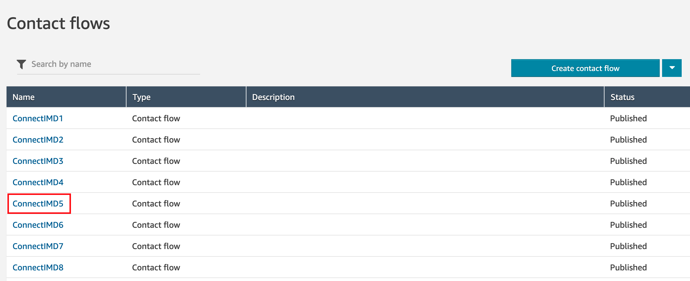
아래의 Contact flow 를 작성합니다. (화면을 클릭하면 확대할 수 있습니다.) 각각의 Command block 에 대한 설정은 다음 항목에서 순서대로 설명합니다. 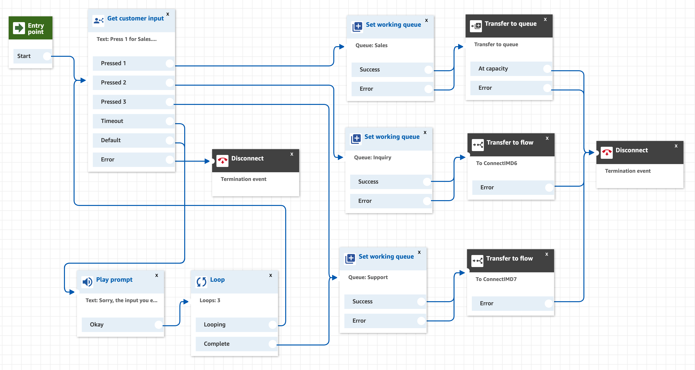
Get customer input Command Block 을 왼쪽 리스트 중 Interact 메뉴에서 Drag&Drop 으로 편집 화면으로 가져옵니다. 아래와 같이 설정한 이후 Save 버튼을 클릭하여 설정을 저장합니다. DTMF 신호를 받아 Contact flow 내에서 시나리오 분기를 할 수 있도록 합니다. 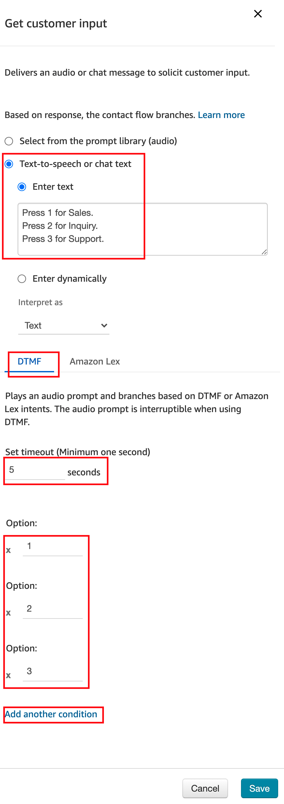
Set working queue Command Block 을 왼쪽 리스트 중 Set 메뉴에서 Drag&Drop 으로 편집 화면으로 가져옵니다. 아래와 같이 설정한 이후 Save 버튼을 클릭하여 설정을 저장합니다. Sales, Inquiry, Support 총 3개의 Queue에 대해 에 Command Block 을 만들고 연결합니다. 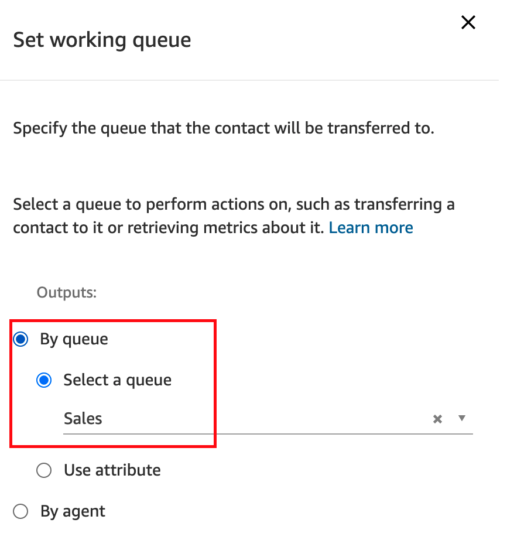 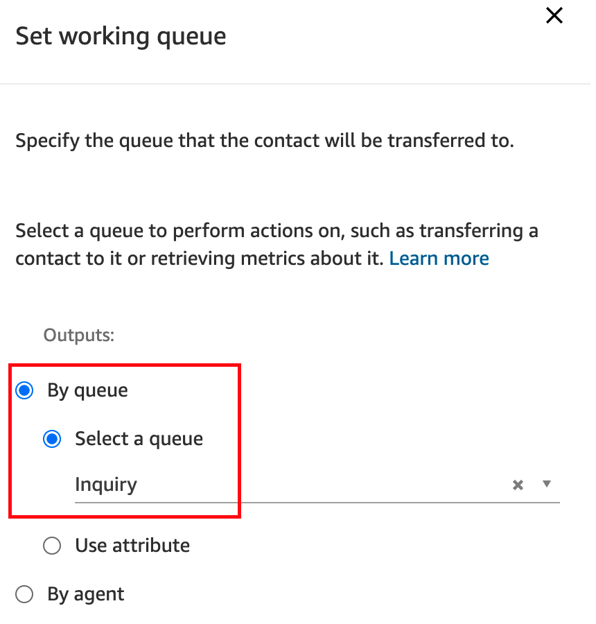 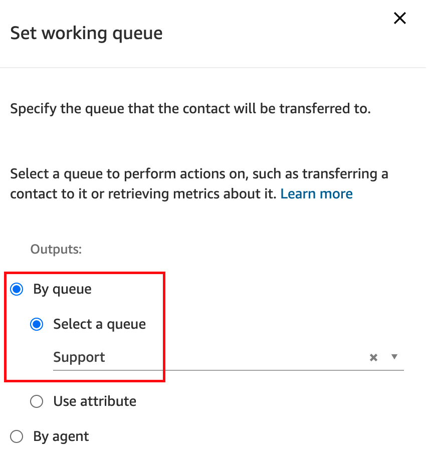
Transfer to queue Command Block 을 왼쪽 리스트 중 Terminate / Transfer 메뉴에서 Drag&Drop 으로 편집 화면으로 가져옵니다. Save 버튼을 클릭하여 설정을 저장합니다. Transfer to queue Command Block 은 별도로 설정할 것이 없습니다. 이전에 Set working queue Command Block 에서 설정한 Queue 로 대기호를 전달하여 상담원에게 연결될 때까지 대기하게 하는 기능을 합니다. Sales 로 Queue 가 설정된 경우에만 연결하도록 합니다. 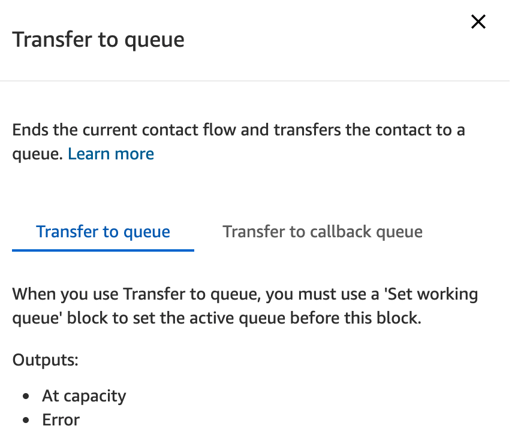
Transfer to flow Command Block 을 왼쪽 리스트 중 Terminate / Transfer 메뉴에서 Drag&Drop 으로 편집 화면으로 가져옵니다. Save 버튼을 클릭하여 설정을 저장합니다. Inquiry, Support 로 Queue 가 설정된 경우 Transfer to flow 를 통해 각각 ConnectIMD6, ConnectIMD7 Contact flow 로 연결될 수 있도록 합니다. 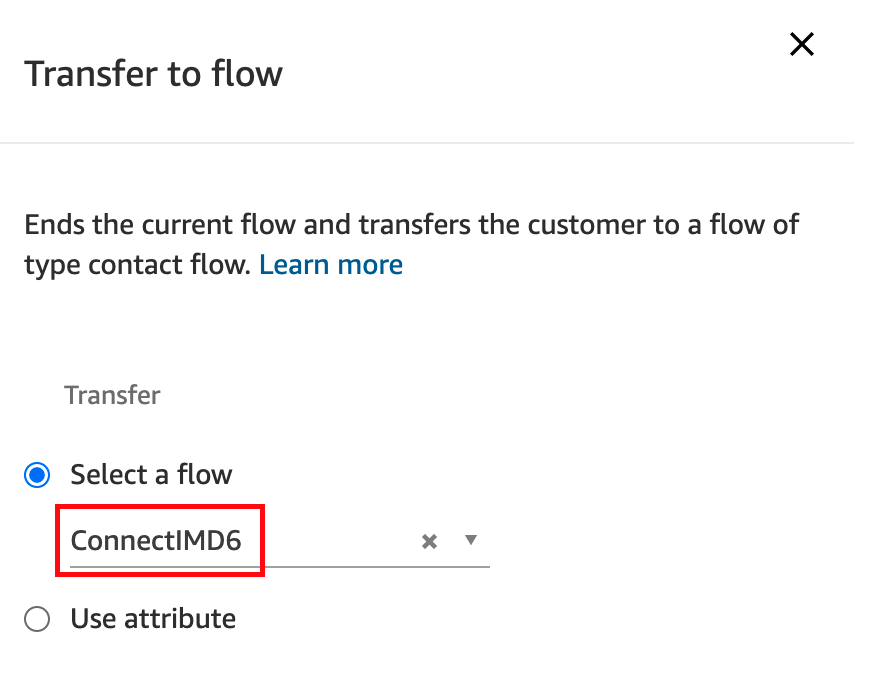 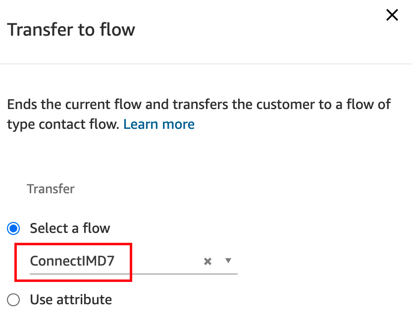
Loop Command Block 을 왼쪽 리스트 중 Branch 메뉴에서 Drag&Drop 으로 편집 화면으로 가져옵니다. 아래와 같이 설정한 후, Save 버튼을 클릭하여 설정을 저장합니다. DTMF 신호를 잘못 입력하거나 시간 내에 입력하지 않았을 경우 3번 반복해서 안내를 한 이후 확인을 하도록 합니다. 3번내에도 입력이 제대로 되지 않을 경우 본 실습에서는 Support Queue 에서 대기하도록 합니다. 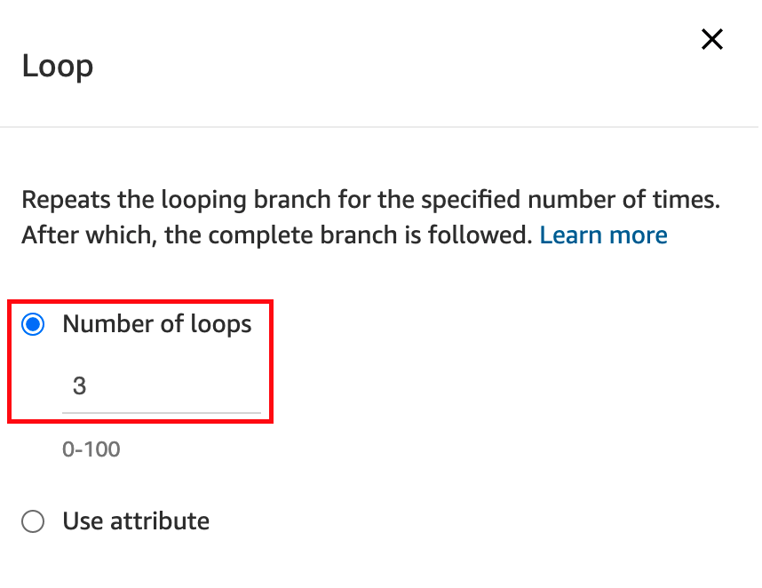
Play prompt Command Block 을 왼쪽 리스트 중 Interact 메뉴에서 Drag&Drop 으로 편집 화면으로 가져옵니다. 아래 Text 를 복사해서 입력합니다. Save 버튼을 클릭하여 설정을 저장합니다.
Sorry, the input you entered is invalid. Please try again.
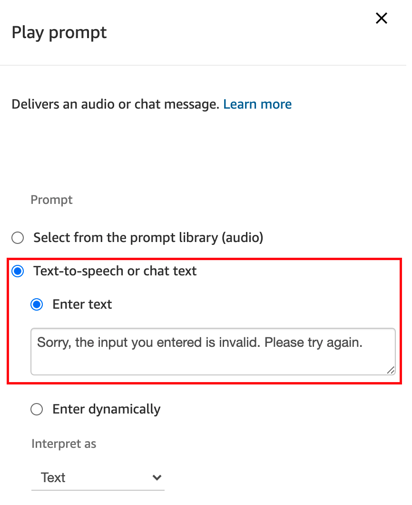
모두 완료 한 이후 Save 및 Publish 할 수 있도록 합니다. 여기까지 진행한 내용으로 테스트를 해볼 수 있습니다.
DTMF 로 고객의 입력을 받아 상담원 연결을 대기할 수 있도록 설정했습니다. 다음 장에서는 챗봇 (Amazon Lex)를 사용하여 DTMF 신호없이 챗봇을 통해 분기를 할 수 있도록 합니다.